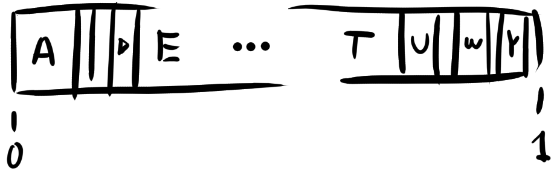
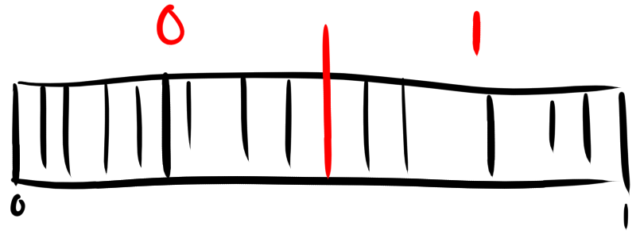
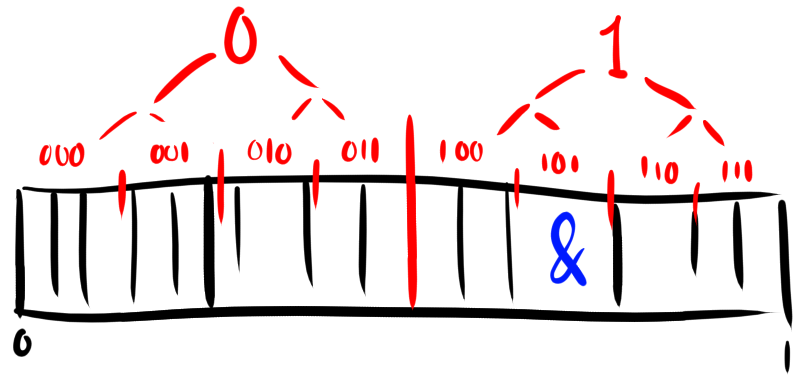
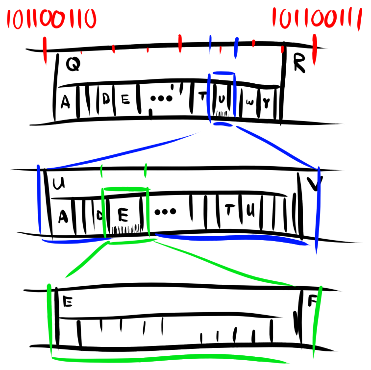
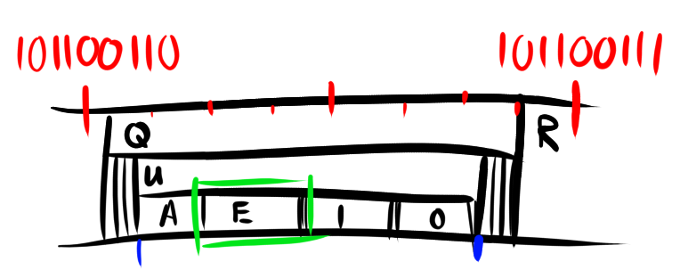
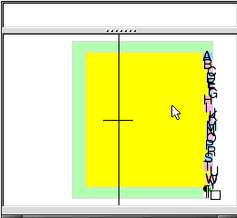

I find that information theory, a core discipline of computer science, is given relatively little attention in a computer science degree. Although Hamming and Shannon are likely to be mentioned at some point, the only attribution to the field I remember having to study were Huffman trees, which are nice, but just one of the many approximations of the true entropy encoding algorithm: arithmetic coding (a.k.a. range coding). It isn’t particularly more complex, yet it holds more theoretical significance because it always encodes messages to the theoretically minimum code length (which is also just called the information content of the data) with respect to a probabilistic model.
Here is my take on an explanation.
Encoding a Symbol
Given an alphabet of symbols and a model of their probabilities, place them in the manner of a CDF of a categorical distribution:

Now, the code for a symbol is simply the base expansion (for a given base, here we use 2 for binary) of the fraction \(0 \le r \lt 1\) whose range (the interval between that number and its successor in the ULP) falls entirely within the interval of the desired symbol. In practice, you can split your space in however many equal parts of your base:

and continuously split until a code’s range falls well within the interval of the symbol to encode:

For instance, the code 101 above (corresponding to the binary fractional 0.101) falls between both bounds of the symbol &, then that terminates the algorithm. The decoder will know what symbol was encoded by using the same distribution and finding the symbol whose interval the number falls under.
Encoding a Message
The beauty of arithmetic coding is the optimality you get by recursively applying the above principle for each symbol inside the interval of the previous symbol. It’s best explained graphically:

By nesting distributions within each other, every string of symbols (however long) corresponds to an interval (however small) and a code. An effective arithmetic coding algorithm continuously “zooms” into the 0-1 interval, maintaining good precision and producing 0s and 1s (or symbols, when decoding) depending on where it “goes”.
Adaptive Coding
Smart models update their probabilities given previous observations, which directly translates in better (shorter) codes in arithmetic coding. For instance, instead of a single categorical distribution like we’ve been using so far based on the relative frequencies of letters in English, you get much better probabilities for English strings by considering the probabilities of symbols given the previous symbol, i.e. a conditional (or equivalently a bigram model). Furthermore a 3-gram model would model English even better and so on…
For instance, even though Q is a relatively rare letter in English (and therefore its unconditional code relatively long), it is almost always followed by a U, in which case, it is almost always followed by a vowel, so given a code for Q and a good conditional model, the code for QUE would not be much longer because it takes a significant amount of space within Q’s interval:

For longer messages, it plays out a bit like the game-like accessibility input method Dasher, which lets a user enter text by navigating the nested space of symbols with a mouse when using a keyboard is not convenient. The program uses a language model that scales the relative sizes of the intervals depending on their probability. (Here is a longer version if you liked that).

Code Length
The geometric representation of probability works especially because it stays consistent across levels: “inserting” a probability distribution within a symbol’s interval has the same effect as scaling it by the probability of that symbol. Ultimately, the probability of a message is the product of the probabilities of all its symbols (i.e. the chain rule) and is equal to the width it takes on the original unit space:
\[P(\texttt{"Hello"}) = P(\texttt{"H"}) \cdot P(\texttt{"e"} | \texttt{"H"}) \cdot P(\texttt{"l"} | \texttt{"He"})\\ \cdot P(\texttt{"l"} | \texttt{"Hel"}) \cdot P(\texttt{"o"} | \texttt{"Hell"})\]
Since a code scales the working range with each additional bit, the length of the code for a message is the number of times the unit space has to be halved in order to fit in the message’s interval, or
\[L(\texttt{"Hello"}) = \left\lceil\log_{\frac{1}{2}}(P(\texttt{"Hello"}))\right\rceil\]
which is just a rounded up version of the more usual representation of information content (in bits):
\[\begin{align}I(A) &= -\log_{2}(P(A))\\ I(\texttt{"Hello"}) &= -\log_{2}(P(\texttt{"Hello"}))\end{align}\]
and since the logarithm of a product is the sum of the logarithms, we get the information theoretic “chain rule” where the information of a message is the sum of the information of the symbols, which makes sense as the length of a code for e.g. a fixed width or bit-aligned coding scheme is the sum of the lengths of the codes of the symbols.
Finally, this gives us the intuition for why arithmetic encoding is optimal compared to a bit-aligned code like Huffman codes. Since in a Huffman tree symbols get assigned a constant code, the best it can provide is codes for symbols as long as their individual information content rounded up. So the length of a whole message would be:
\[L_\textrm{Huff}(A) = \sum_{k=1}^{n}\left\lceil I \left(A_{k}\,{\Bigg |}\,\bigcap_{j=1}^{k-1}A_{j}\right)\right\rceil\]
Whereas arithmetic coding only has to round at the last bit:
\[L_\textrm{Arith}(A) = \left\lceil\sum_{k=1}^{n} I \left(A_{k}\,{\Bigg |}\,\bigcap_{j=1}^{k-1}A_{j}\right)\right\rceil\]
So in general, \[L_\textrm{Arith}(A) \le L_\textrm{Huff}(A)\] and they are only ever equal when all the relative probabilities in the model happen to be exact multiples of the base e.g. (0.5, 0.25, 0.125, etc. for binary).
EOM
A caveat to the above length calculations is that some strings could be un-encodable if the probability of any symbol after the last happens to be more than \(1/\)base, as the working range might drop within the interval of further nested symbols after encoding the last symbol without adding more code, leading to a code corresponding to more than one possible message.
The fail-safe solution to this, typically included in specifications of arithmetic encoding, is either to add an EOM symbol that signals the end of the string or prepend some fixed-length size parameter and have the decoding algorithm count to know when to stop decoding.
In either method, the added length to the code is on the order of \(\log(L)\) which is usually insignificant compared to \(L\) unless when encoding very small messages.